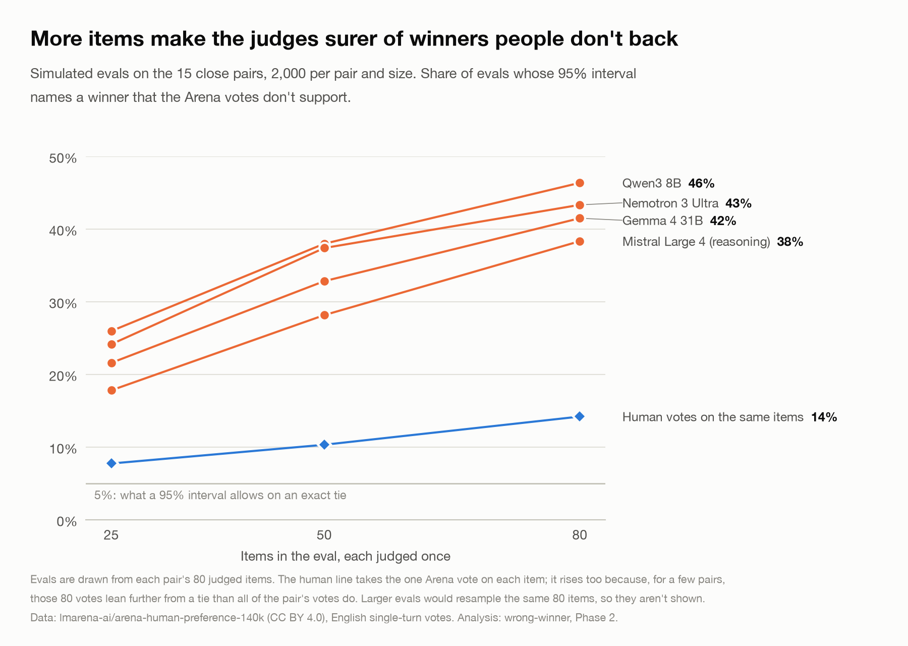
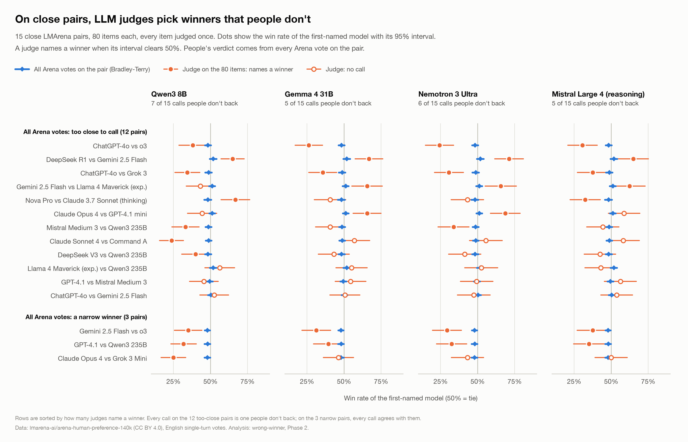
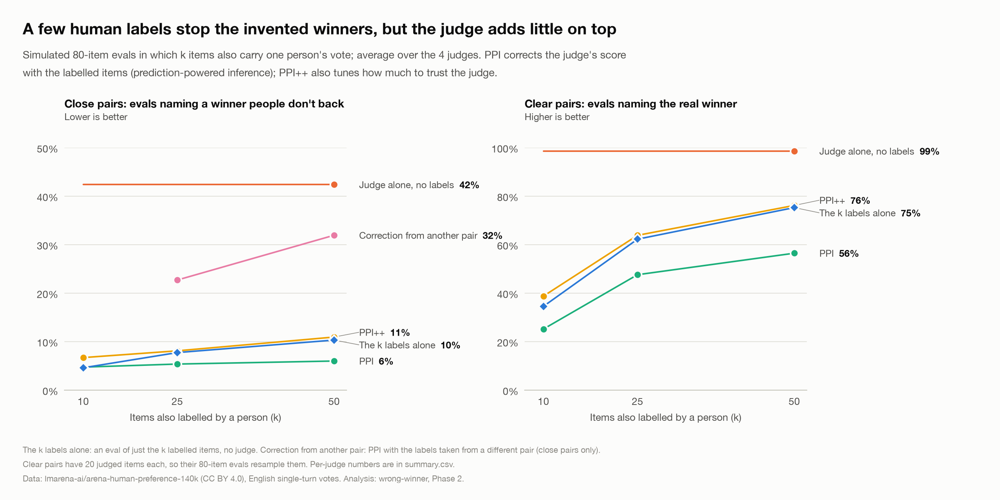

Your LLM judge says v2 wins. It might be a tie.
If an LLM judge says prompt v2 beats v1 by a few points, treat it as a tie until people agree. On 15 close comparisons from LMArena, four open LLM judges each named a winner people didn't back on 5 to 7 of them. A bigger test set made that more likely, not less. Big gaps were safe: no judge ever picked the wrong side of a clear comparison.

The eval you already run
You have v1 in production and a candidate v2: a new prompt, a new model, a new retrieval setup. You run both on 25 to 100 test inputs and ask an LLM judge which answer is better for each. If v2 wins and the 95% interval clears 50%, you ship it.
That works when v2 is clearly better or clearly worse. The risky case is the common one: v2 is about as good as v1. You can't check a judge on your own app without people's verdicts, so this study used a public dataset that has them.
| In your eval | In this study |
|---|---|
| v1 vs v2, about equally good | 15 close LMArena pairs, such as ChatGPT-4o vs o3, within 2 points of a tie |
| Your test set | 80 real user prompts per pair, each answered by both models |
| Your LLM judge | Four open models from 8B to about 1T parameters, judging each item once |
| The truth you don't have | All English single-turn Arena votes on the pair (a Bradley–Terry fit) |
| A clear improvement | 10 clear pairs, 7 to 24 points from a tie, as a control |
A judge names a winner when its 95% interval on the win rate clears 50%, the rule a careful team already uses.
On close calls, judges invent winners
Take ChatGPT-4o vs o3. Across all Arena votes, o3 wins 51.7% (95% interval 49.6–53.8%): a tie. On the same 80 prompts, all four judges picked o3, at 62% to 76%, and every interval cleared 50%. A team running this eval would ship o3 on a confident result that people don't back.
Across all 15 close pairs:
- Each judge named a winner people don't back on 5 to 7 pairs.
- The Arena votes on the same 80 prompts named one on none.
- Every bad call was a winner invented on a tie. No judge ever named the loser of a pair people can separate.
- On average the judges sat 10 to 13 points from a tie. All Arena votes sat 1.5 points from it.
The chart shows every close pair: blue is all Arena votes, orange is a judge on the 80 prompts, filled when it names a winner.

More test cases made it worse
The usual fix for a shaky result is a bigger test set. Here it backfired. In 2,000 simulated evals per pair and size, the share naming a winner people don't back rose from 18–26% at 25 items to 38–46% at 80, as the chart at the top shows.
The reason is simple. A 95% interval only covers luck in which items you drew, not the judge's own lean. More items shrink the interval, the lean stays the same size, and eventually the lean looks like a real win.
More data doesn't fix a biased judge. It makes the bias look like evidence.
Human votes on the same items went from 8% to 14%. On an exact tie a 95% interval allows 5%; the human line runs higher because, for a few pairs, those 80 votes lean further from a tie than all of the pair's votes do.
Bigger judges, reasoning and panels didn't help
- Size: no trend from 8B to about 1T. Unbacked winners on 7, 5, 6 and 5 of 15 close pairs, smallest judge to largest.
- Reasoning: Mistral Large 4, the one judge that reasons, was lowest in the simulated 80-item evals (38%). That is a single judge, not a trend.
- A panel: the judges agree with each other, not with people. All four picked o3 over ChatGPT-4o, Grok 3 over ChatGPT-4o and DeepSeek R1 over Gemini 2.5 Flash, where people see ties. A majority vote would make the same calls. This rests on a handful of pairs: three or more judges shared an invented winner on 4 of the 15.
- Self-preference: no judge favoured its own family's models more than the other judges did. This is exploratory, with 4 to 9 pairs per family.
What helped: 25 labels from the same comparison
Have a person label a random sample of the same test items, then combine those labels with the judge. This study used PPI++ (power-tuned prediction-powered inference), which weights the judge by how well it tracks people.
With 25 labels in an 80-item eval:
- Unbacked winners on close pairs fell from 38–46% with the judge alone to about 8%.
- On clear pairs, the real winner was still found in 63–65% of evals, and in 76–77% with 50 labels.
Two results surprised me:
- The judge added almost nothing on top of the labels. PPI++ put a weight of 0.06 to 0.29 on the judge, where 1 means trust it fully. The 25 labels alone did about as well. Plain PPI, which trusts the judge fully, found fewer real winners than the labels alone (54–61% against 75% at 50 labels).
- A correction from another comparison doesn't transfer. Reusing 50 labels from a different pair still left 24–38% unbacked winners. The judge leans differently on every pair.
On a true tie, 25 labels won't name a winner. They'll say the difference is too small to measure. That is the right answer: decide on cost, latency or safety instead.
The chart shows what 10, 25 and 50 labels buy.

Before you ship v2
- Run every item in both answer orders, and count a flip as a tie. Judges changed their verdict on 26–51% of items when the answers swapped, mostly toward the first one. That is about where GPT-4 was in 2023 (35% on near-identical answers).
- Read the judge's win rate. Above 80% or below 20%, trust the direction: on the 10 clear pairs no call went the wrong way. Between 20% and 80%, don't trust the judge alone. On pairs people call a tie, judges reached 76%.
- Don't add test items to settle a close call. It makes an unbacked winner more likely.
- Label 25 items yourself, picked at random from this comparison. Combine them with the judge (PPI++) or use them alone.
- Still no clear winner? Call it a tie. Decide on cost, latency or safety, and say so.
- Re-label for each new comparison. Last month's correction doesn't carry over.
The 80% line is a rough guide set from these pairs, not a measured threshold.
Check your own eval in one command
I turned the checklist into a small open-source CLI, wrong-winner. Install it from a clone of the repo with pip install -e ., then give it one row per test item with the judge's verdict in each answer order:
id,judge_a_first,judge_b_first
q1,b,tie
q2,a,
q3,b,bwrong-winner check verdicts.csv --a v1 --b v2Here is its result on ChatGPT-4o vs o3 with the Gemma 4 31B judge (trimmed):
Judge alone
o3 wins 74.4% (ties count half; 95% interval 65.3–83.4%)
That interval covers sampling noise, not the judge's own bias.
Result: NOT PROVEN
The judge favours o3 by 24 points and its interval excludes a tie, but that is not
enough. In Phase 2, on pairs people saw as ties, judges went up to 26 points from a
tie and named a winner on 5–7 of 15 pairs.
More test items won't fix this; human labels will.wrong-winner pick verdicts.csv 25 -o labels.csv picks 25 items for you to label, with the judge's verdicts hidden. Using the Arena votes as those labels:
Your labels (25 items)
o3 wins 56.0% (95% interval 39.9–72.1%)
The judge agreed with you on 10 of 25 items (kappa 0.09).
Judge and labels combined (PPI++, judge weight 0.10): o3 wins 55.2% (95% interval
39.2–71.2%)
Result: NO MEASURABLE DIFFERENCE
With 25 labels, ChatGPT-4o and o3 are too close to tell apart.
If the gap is really 5.2 points, roughly 236 labels would settle it.
A gap this small may not be worth chasing: decide on cost, latency or safety instead.The exit code makes it a CI gate: 0 when v2 is shown better, 1 when it isn't, 2 on bad input. --gate not-worse fails only when v1 is shown better. From Python, from wrong_winner import check.
Run over every Phase 2 judge and pair with no labels, it named no winner on any of the 48 results where people see a tie. It named the right winner on 24 of the 40 clear-pair results and never the wrong one. Its rule was set from these same pairs, so that is a sanity check, not an independent test.
What this doesn't show
- Pairwise preference only. The judges answered "which is better?", not pass/fail against a rubric. I expect the same mechanism, a lean that a shrinking interval hides, in pass rates too, but didn't test it.
- Chat, not your app. The prompts are English, single-turn LMArena chats. A run on a real app task, such as two prompts for support replies, is the obvious next test.
- Four open judges. No GPT, Claude or Gemini judge was run.
- Small per-pair samples. With 80 items, one judge's win rate on one pair is known to about ±10 points. The claims are per group; the panel result rests on a handful of pairs.
- Not new in principle. Judges were already known to struggle on close pairs (Zheng et al., 2023), and Dorner, Nastl and Hardt (2025) showed why a judge no better than the models it judges can't save many labels. What this adds is the numbers a team faces at 25 to 80 items, and a label budget.
How it was run
- Data: LMArena's public preference dataset, 135,634 votes from 2025 (CC BY 4.0), English single-turn votes only. Of 40 selected pairs, 25 were judged: 15 close with 80 items each, and 10 clear with 20 each.
- Judges: Qwen3 8B on a laptop through Ollama; Gemma 4 31B, Nemotron 3 Ultra (550B) and Mistral Large 4 (about 1T, reasoning) on NVIDIA's free endpoints. Same instructions for all, model names hidden, verdict only. 1,500 calls per judge, about 6,000 in all, for $0.
- Analysis: 2,000 simulated evals per pair, size and method, with Student's t intervals. The headline also holds with each pair's own votes as the truth, and with each model left out in turn.
- Reproduce: the saved verdicts are in the repo, so every number and chart rebuilds with no judge calls.
Sources
- Code, data and the CLI: github.com/ishaan-jain-ai/wrong-winner; full results in PHASE2.md
- LMArena arena-human-preference-140k, the data (CC BY 4.0)
- Zheng et al. 2023, Judging LLM-as-a-Judge with MT-Bench and Chatbot Arena
- Angelopoulos, Duchi and Zrnic 2023, PPI++: Efficient Prediction-Powered Inference
- Dorner, Nastl and Hardt 2025, Limits to scalable evaluation at the frontier: LLM as judge won't beat twice the data